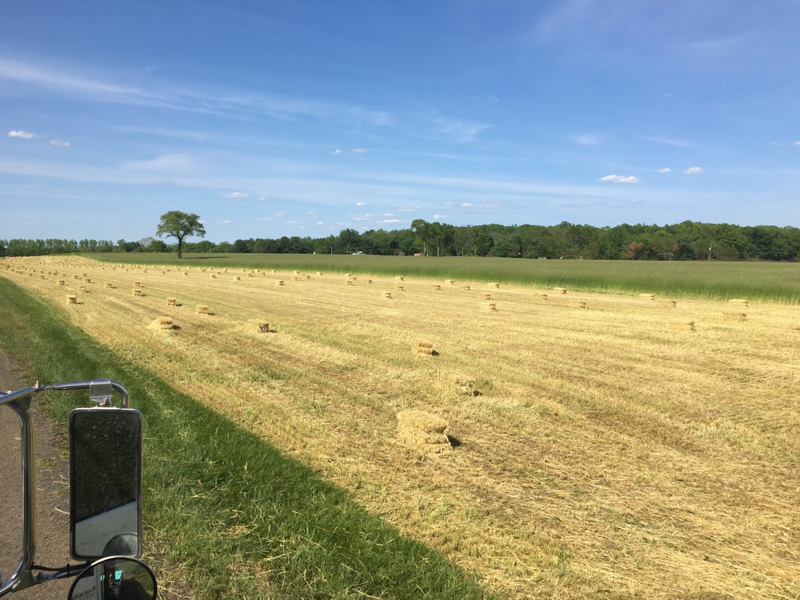

Rabbits
Be sure to check out our Pet Food Section
New! Introducing the New Zealand White Rabbit brought to you by Greenfellow Farms.
About Our Farm
We are a large scale rabbit breeder specializing in providing high quality rabbits for homesteading, pet food, medical research, fur, or general consumption. Our rabbits are fed an all natural pellet food diet combined with alfalfa hay straight from our very own farm.
We Are Natural
We are very proud to say that we do not use any antibiotics or hormones of any kind to raise our rabbits. We believe that by allowing nature to take its course, we can provide very healthy happy rabbits. You can rest assured that you are receiving the BEST quality rabbits available.